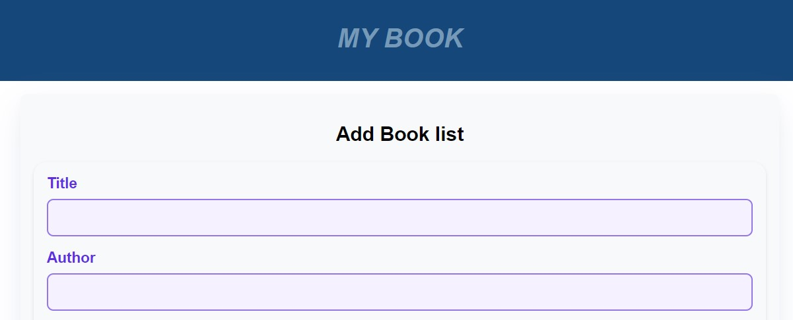

Latest Project



I am a 6th-semester student majoring in Computer Engineering at Krisnadwipayana University. I have been involved in innovative projects using Python, JavaScript, and Php. My focus is on web development with a special interest in the field of data science.
+62 858 8003 0860 yakobutama0819@gmail.com linkedin.com/in/yakobutamas/ Sawangan, Depok
SUMMARY
INTERNSHIP EXPERIENCE
EDUCATION
SKILL
Soft Skills